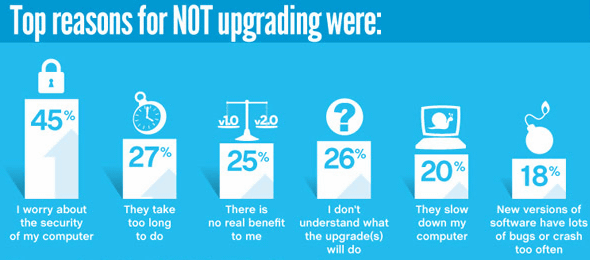
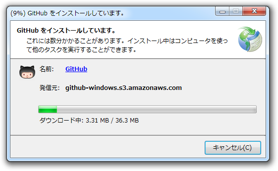
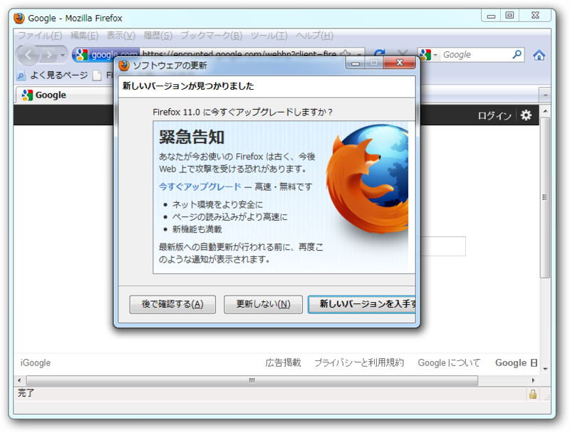
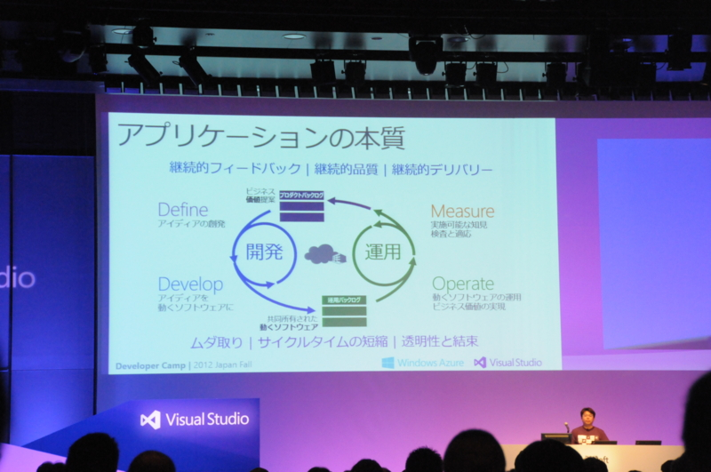

「高速リリースの真価」について
執筆日時：
第27話：高速リリースの真価 - ＃モリトーク - 窓の杜 があんまり気に入っていないので、自分なりの意見をまとめておこうと思う。
なぜ「高速リリース」にしたいのか
高速リリースの真価を語るなら、「なぜそれが必要なのか」「なぜ今それが必要になっているのか」をまず明らかにしなければならないかな。たとえば、Mozilla による答えはこうだ。
プレリリース版でブラウザーの新機能を試そう | Firefoxなぜリリースサイクルを短縮するのですか？
Web ブラウザは、他のアプリケーションと異なり、Web という「生き物」を相手にしています。HTML5 や CSS3 など新たな標準技術が次々に考案され、ソーシャルメディアなどのトレンドも目まぐるしく変わっています。Web の進化するスピードが速くなっているので、これまでのように半年から 1 年周期のアップデートでは間に合わなくなっているのです。
ソフトウェアがちゃんと「生き物」を相手にしてくれるようになったとは喜ばしい限りだな！ とはいえここでいう「生き物」とは「変化する外的環境」程度の意味しかなくて、まだまだ「人間」を意味するものではないのだけど。まぁ、そこを嘆くのはやめて、今日はアップデートとは何かを少し考えてみるのでお付き合いいただきたい。
「リリース」とはなにか
ソフトウェアにはなぜアップデート（リリース）が必要なのか。それは突き詰めると機能の「追加」と「維持」だ。
機能の追加というのはわかりやすい。新機能の搭載や、既存機能の強化といった類のものだ。それが魅力的であれば、開発者が黙っていてもユーザーは競ってアップデートしてくれるだろう。後述の「機能の維持」と比べて主体的で能動的かつオプショナルであるという側面をもち、ユーザーはそれを受け入れるかどうかの選択権をもつ。
機能の維持というのは、おもに「外的環境」からの要請に依る。新しい OS をサポートしなければならない、セキュリティ問題を突く攻撃が編み出されたので対応しなければならない、競合ソフトが機能強化されたのでそれに追随しなければならない、といった外的要求にこたえる受動的な側面が強く、多くの場合ユーザーにとって必要であり、できれば強制したいアップデートでもある。
もちろん、機能が削られることもある。しかし、外的要求の喪失 → 品質の維持・向上のためにはずすといった場合がほとんどだと思うので、ここでは割愛している。
「なぜリリースサイクルを短縮するのですか？」でMozilla が暗に仄めかしているのは、おもに Web アプリケーションを中心に「機能の追加」よりも「機能の維持」がより重要視される局面が多くなってきたということだろう。そこで、Mozilla は「高速リリース」にしたかった。これはユーザーにとっても歓迎すべきことのはずだけれども、なぜか反感を買ってしまった。それはなぜなのだろう。
「高速リリース」に必要なものは何か
結論を言えば、準備不足なまま「高速リリース」へ移行してしまったからだ。
では、「高速リリース」に必要な準備とは何か。その前に、さきほど説明した「機能の追加」と「機能の維持」というアップデートが担う二つの役割と、それに応じたアップデートの方法を表にまとめてみたのでみてほしい。
| アップデート | 機能の追加 | （インストーラー） | 機能の維持 | （自動アップデート機能） | |
|---|---|---|---|---|---|
| 性格 | 能動的 | ユーザーによるアップデートの選択 | 受動的 | 開発者からのアップデート要求 | |
| 単位 | 機能の追加 | 不定期な大型アップデート | メンテナンス | 逐次的な小規模アップデート | |
| 緊急性 | オプショナル | インストーラーによる配布 | 必須 | 自動アップデート |
「機能の追加」を軸としたアップデートでは、開発者が機能を実装した時（不定期）に、インストーラーで配布すればよかった。一方、「機能の維持」を軸としたアップデートでは、アップデート機能を利用した小さなパッチを逐次的に配布する方法が必要になる。
しかし、そのまま配布してもユーザーはこれを受け入れてくれない。

誰もソフトを更新してくれないためアドビやSkypeが更新キャンペーンを開始 - GIGAZINE
- 「セキュリティが心配だから」
- 「時間がかかるから」
- 「更新によるメリットがないから」
- 「更新してどうなるのかわからないから」
- 「動作速度が遅くなるから」
- 「新しいバージョンにバグがいっぱいだから」
“これまでに体験したことのない使い心地”や“誰もが驚くべき新機能”といったまるでアップルの謳い文句のような機能が毎回提供できれば、これまでのインストーラーベースのアップデートでもリリースサイクルの短縮は可能だろう。頼まないでもユーザー側から挙ってアップデートしてくれる。しかし、そんなこと到底不可能だ。
そこで重要になるのが、新機能や機能強化の訴求なしに、ユーザーをアップデートさせる仕組み――アップデート配布システム・バックグラウンドアップデート・定期アップデート――だ。
アップデート配布システム
まず、アップデート配布システム。これは必須といっていい。どこかで拾ってきたわけのわからないアップデートプログラムを実行するより、正式なアップデート手段が公式に提供されているほうが安心だし、時間もかからない。

オンラインソフトにはアップデート機能がついたものが少ないけれど、たとえば ClickOnce なんかをつければ簡単に追加することができる。使いたくない理由もだいたい察するけど、できれば活用してほしいところ。
バックグラウンドアップデート

次に採用すべきは、いわゆる「サイレントアップデート」機能だろう。「いいえ」って選んでもどうせあとで「更新してください」って言うんでしょ？ だったらハナから黙って入ってくれたほうがいい。
定期的なアップデート
あと、アップデートの配布がさほど緊急に必要ないのであれば、ある程度まとめて一度に配布したほうがいい。そのほうがユーザーに受け入れられやすいはずだ。
たとえば、Windows のアップデートは原則1カ月に1回で、月初めの火曜日だか水曜日に配布される。こうしてもらえれば、ユーザー側も対応しやすい。「あー、今日はアップデートの日か」。
ちなみに、高速リリースサイクルを採用している製品のおもなリリース間隔は以下の通り。
- Windows Update: 1回/月 *1
- Adobe Reader：1回/四半期 → 1回/月*2
- Mozilla Firefox/Thunderbird：1回/6週間*3
- Adobe Flash Player: 不定期
なお、Apple Software Update はアップデート機構をもっているけれど、日頃はセキュリティ問題を見て見ないふりをして機能追加時にこっそり修正するというポリシーなので、「逐次的な小規模アップデート」にはあたらない。Apple という会社は、こうした根本的なところで「体験」よりも「機能」に軸を置いたアップデートをしているからあんまり信用がならない。
「Google Chrome」の無謀と「Mozilla Firefox」の躓き
アップデート配布システム＋バッググラウンドアップデートの行きつく究極形態は、「Google Chrome」がやっている“問答無用アップデート”だ。
初めてみたときは無茶をするなぁと思ったけれど、ユーザーがなぜアップデートを嫌がるのかを考えれば非常に合理的といえる。
- 「セキュリティが心配だから」→こっそり入れれば問題ない
- 「時間がかかるから」→バックグラウンドでこっそり入れれば気付かない
- 「更新によるメリットがないから」→メリットあるから勝手に入れるわ
- 「更新してどうなるのかわからないから」→入れてから体感しろ
- 「動作速度が遅くなるから」→こっそり入れれば気付かない
- 「新しいバージョンにバグがいっぱいだから」→こっそり入れれば（ｒｙ
これが道義的に正しいかどうかは置いといて、ユーザーにとって不便が少ないのは認めなくてはいけないだろう。ただ、自分が管理者だったら「Google Chrome」を業務に採用しないだろう。まぁ、便利だから使ってるけどね。
だいたい、インストーラーによる配布が一般的だった時代から、ユーザーはアップデートを自分で選択できることに慣れている。加えて、社内での導入なども考えれば、ある程度アップデートはユーザー側でも管理したいところ。「Google Chrome」はその点、ちょっとやり過ぎというものだ。
一方、Mozilla はバックグラウンドアップデートの導入をせずに、定期アップデートのみを当初採用した。その結果がこれ。
リンクを踏む → 「新しいアップデートがあります」 → 「ダウンロード中です」 → Windows「firefox.exe から応答がありません」＼ﾃﾞﾝｯ！／
「Google Chrome」がバックグラウンドでアップデートを仕込み、素早く Web ページを開いてくれるのとは対照的。
ほかにも拡張機能のアップデートが追い付かずに次々と討ち死にしたという経緯などがあるけれど、それも含めて「当然起こりうること」への備えが足りず、いろいろ躓いてしまった感じ。
こうした「Firefox」の躓きが「高速リリース」へのネガティブな印象につながっているが、「Adobe Flash Player」のケースでは心配しなくていいと思われる。事前にちゃんとバックグラウンドアップデート機能を搭載してあるので、ユーザーへの負担は少ないはず。ただ互換性に関しては……テストが不十分なパッチを配信して世界を混沌の渦へ叩き込む恐れがないわけではない。
ちなみに、「高速リリース」になったからと言って品質テストが省かれるわけではない。なにも手抜きをするために高速化しているわけではないので・アップデートの品質と、アップデートの配布形態にはあまり関連性がないと思う。もともとテストが行き届いていないだけでアル。
「高速リリース」、「アジャイル」と「クイック実行」

パワポの魔術師・長沢さんのセッションより
Developer Camp 2012 Japan Fall に参加してきました！（1日目） - だるろぐ でひとつ発見だったのは、「ほんとに“アジャイル開発”って実践してるんだ！」ということ。
自分は大規模ソフトウェア開発なんかに縁のない人間だけど、“アジャイル開発”の話を聞くたびに「ちょっと“理想論”に寄り過ぎなんじゃないかなぁ」と感じていた。でも、「Visual Studio」をはじめとする支援ツールの準備が整い、しかも“Windows Azure”なんかでも実際に行われている *4 と聞くと、別に夢物語ではないんだ、と感じる。
考えてみれば、「リリース」の裏側にはかならず「開発」があるわけで。「高速リリース」の裏側がすべて「アジャイル」だというつもりは毛頭ないけれど、リリースサイクルを早めるならばサイクルそのものの強化も重要になるはず。なので、今後は目に見える機能やデザインだけでなくて、アジャイルに代表されるような開発・管理の手法とその実践にも目を向ける必要があるなぁ、と感じた。
あと感じたのは、ソフトウェアはどんどん“サービス”化、“オンデマンド”化しているということ。これは前からも言われているけれど、自分はちょっとその意味を軽く評価していた。ソフトウェアそのものには価値はない。ソフトウェアの機能、それが提供する経験こそが価値であり、重要だ。
実際、「Microsoft Office 2010」「Microsoft Office 2013」なんかは“クイック実行”という仕組みをもっているよね。必要な時に、それを実現するバイナリのカケラだけがネットワークから降ってくる。
クイック実行とは、マイクロソフトの仮想化およびストリーミング テクノロジを使用して、Microsoft Office をブロードバンド経由で配信したり、更新したりする新しい方法です。
アプリケーションストリーミング（英: Application Streaming）は、アプリケーションのインストールイメージについて、その各部の実行順序、依存関係等を解析し、その解析結果に基づいてバイナリを小さな単位（通常4キロバイト）に分割し、それをストリーミングサーバと呼ばれるサーバ上に登録し、クライアント側におけるユーザによるアプリケーション操作に応じて、その操作に必要なバイナリ部分を逐次配信するという方法である。
もはや、更新と実行の区別すらあやふやになってくる。こういうのをみると、ほんと、いまのソフトウェアはりナマモノだと感じるよね。「生き物」を相手にするには、それ自体も「生き物」に近づいていく必要があるらしい。もちろん、全部が全部こうしたナマモノになっていくわけではないけれど、今後ますますこうした新鮮なナマモノとしてのソフトウェアが多くなってくるのだろう。
では、あらためて。「高速リリースの真価」とはなにか。
ひとつは、「高速リリース」で得られるもの。より新しくて、安定・安全で、使いやすい。そんな新鮮なナマモノとしてのアプリケーションがネットワークを通じて瞬時にデリバリーされること。これは明らかに「高速リリース」の“真価”といえる。
ただ、これだけではない。「高速リリース」というデリバリーの仕組みそのものがアプリケーションの評価につながっていることにも注目したい。単にアップデート配布の仕組みだけに留まらず、アプリケーションライフサイクルそのものの維持・強化、貢献者と利用者の数と質の維持。これからはこういったものすべてがアプリケーションの価値に関わってくる。いわば、「総力戦」の時代に突入してきたのではないかな。それを示してくれたというのも、ひとつの“真価”として評価していい。
ソフトウェアをひとつ選択すれば、それにロックインされて長く使い続けなければならない場合も多い。だから、今目に見える価値だけでなく、そのビジョンや継続可能性にも目を配るべき時代になっていると感じる。
趣味プログラマーにとっては、もう想像もつかない世界だよｗ